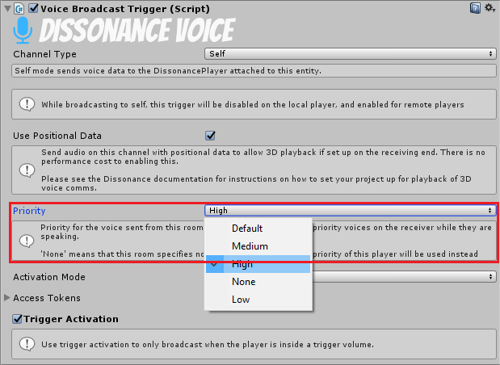

Channel Priority
Channel priority can be used to automatically mute low priority channels while high priority channels are speaking. For example muting the global voice chat room whilst someone in the team chat room is talking.
Priority Levels
There are 4 priority levels which can be set on a channel:
1. Low 2. Default 3. Medium 4. High
If a player is receiving voice from multiple sources then the sources with the highest priority will play and all others will be muted.
There is another priority option: None. If this used then the priority falls back to the default value for this player, which is set in DissonanceComms.PlayerPriority. If None is specified as the default player priority then Default is used instead.
Defining Priority
The priority of a channel can be defined in a number of ways. The inspector for the Voice Broadcast Trigger allows you to set the priority for voice sent with this trigger:

In scripts you can change the priority for a VoiceBroadcastTrigger with the Priority property:
var trigger = GetComponent<VoiceBroadcastTrigger>(); trigger.Priority = ChannelPriority.High;
Alternatively if you are directly using channels from scripts instead of using the trigger components you can set the priority when the channel is created, and then modify it from the channel object at any time:
var comms = GetComponent<DissonanceComms>(); //Create the channel with an explicit priority var channel = comms.RoomChannels.Open("Room Name", priority: ChannelPriority.High); //Change the priority channel.Priority = ChannelPriority.Medium; //Close the channel channel.Dispose();